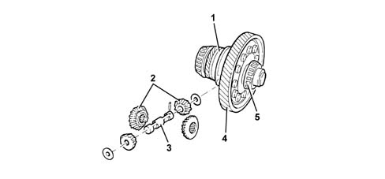

2110D manual gearbox differential
- Path
- Descriptions > 21 GEARBOX > 2110 MANUAL GEARBOX AND DIFFERENTIAL > 2110D manual gearbox differential
- Kind
- system description
- Applies to
- all engines; all production periods
- Interactive page
- https://sloeber94.github.io/elrnDB-a147/en/#/3022465
Applies to: engines: 1.6 TS; all production periods
CONSTRUCTION FEATURES
The differential consists of:
- a crown wheel and pinion reduction
- a differential housing constructed in a single piece which includes the differential and planet gears.
The differential housing is supported by two conical bearings and the ring gear is fixed by bolts.

1 - Manual gearbox internal differential housing 2 - Manual gearbox differential planet-satellite gears 3 - Manual gearbox differential satellite carrier Manual gearbox differential thrust washers 4 - Manual gearbox differential ring gear 5 - Manual gearbox differential internal shafts bearing
Applies to: engines: 2.0 TS; all production periods; only with equipment: Cambio robotizzato
CONSTRUCTION FEATURES
The differential consists of:
- a crown wheel and pinion reduction
- a differential housing constructed in a single piece which includes the differential and planet gears.
The differential housing is supported by two conical bearings and the ring gear is fixed by bolts.
1 - Manual gearbox differential internal housing 2 - Manual gearbox differential planet/satellite gears 3 - Manual gearbox differential satellite carrier Manual gearbox differential thrust washers 4 - Manual gearbox differential ring gear 5 - Manual gearbox differential internal shaft bearing
Applies to: engines: 3.2 V6; all production periods
COMPONENT DESCRIPTION
DIFFERENTIAL
Composition
Structure
The differential consists of:
- a crown wheel and pinion reduction;
- a differential housing made from two half casings which include the planet and satellite gears.
The differential housing is supported by two conical bearings and the ring gear is fixed by bolts.
The drive gear for the speedometer is fitted on the outside of the differential housing.
Applies to: engines: 1.9 JTD 8V, 1.9 JTD 16V; all production periods
COMPONENT DESCRIPTION
DIFFERENTIAL
Composition
Structure
The differential consists of:
- a crown wheel and pinion reduction;
- a differential housing made from two half casings which include the planet and satellite gears.
The differential housing is supported by two conical bearings and the ring gear is fixed by bolts.
The drive gear for the speedometer is fitted on the outside of the differential housing.